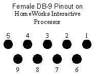

Technical Specifications

|
HW Pin Number |
HW Pin Name |
Description for HomeWorks Processor |
Required for Hardware Handshaking |
Required for Simple Communications (hardware handshaking disabled) |
|
1 |
DCD |
Data Carrier Detect (input) |
||
|
2 |
TX |
Transmit Data (output) |
X |
X |
|
3 |
RX |
Receive Data (input) |
X |
X |
|
4 |
DSR |
Data Set Ready (input) |
X |
|
|
5 |
GND |
Ground |
X |
X |
|
6 |
DTR |
Data Terminal Ready (output) |
X |
|
|
7 |
CTS |
Clear To Send (input) |
X |
|
|
8 |
RTS |
Request To Send (output) |
X |
|
|
9 |
RI |
Ring Indicate (input) |
General Specifications
Using Simple 3-Wire Communications